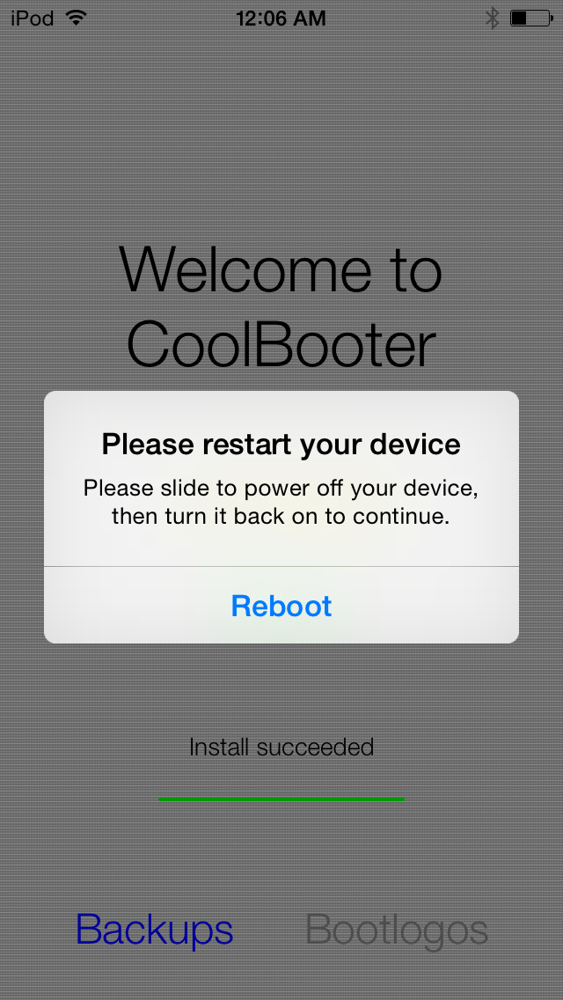
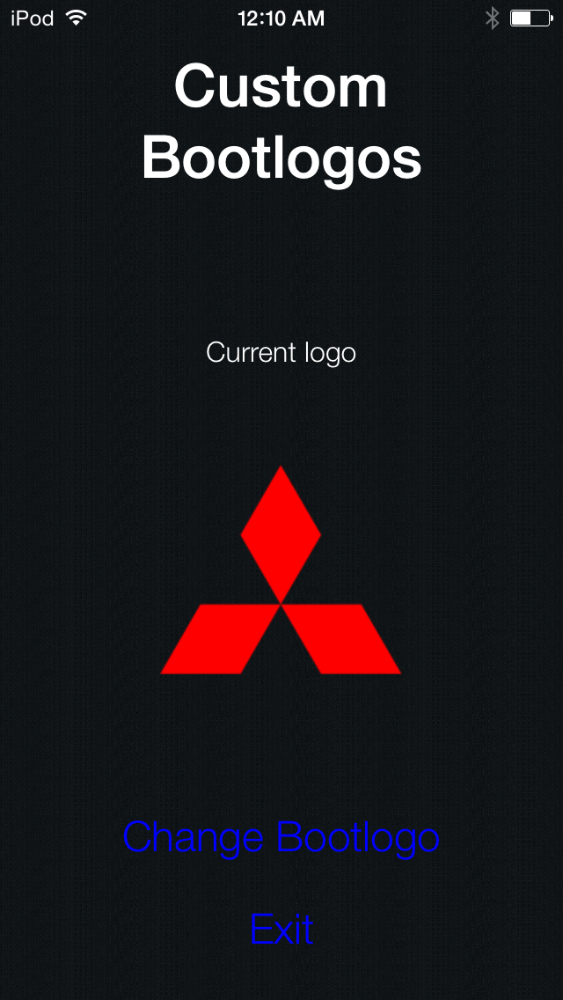
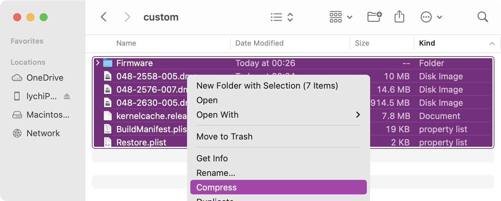

A pretty straight forward tutorial on how to create custom bootlogos for devices utilizing the iOS 7 iBoot exploit De Rebus Antiquis with Dora2-iOS's powdersn0w. This tutorial is only for devices that can be used with the tool, so you must have iOS 7 shsh blobs for your device.
A jailbreak
Apple File Conduit 2 (afc2)
CoolBooter (version 1.5)
Source image for bootlogo
powdersn0w IPSW
To preface, you're going to need a device that has the same screen size as your target device to create the bootlogo. This means that in order to generate a bootlogo for a device with a 4" screen, you're going to need a device with a 4" screen that's jailbroken and with CoolBooter installed to create the logo (CoolBooterCLI does not work with this AFAIK, so you have to be on iOS 7 or above to create the logos). This is just from my exprience. If other devices work, good for you.
First add the CoolBooter repo in Cydia. The repo is coolbooter.com
Install CoolBooter in Cydia. The latest version of CoolBooter has been rather unreliable, but CoolBooter 1.5 works just fine, so when installing, downgrade to 1.5. Afterwards, install Apple File Conduit 2. This will it allow you to get the custom logo file from the device onto your computer after creating it.
Open CoolBooter and install any version. I typically go with whatever is the oldest; The firmware file is usually the smallest so it takes less time to download and install.
Once the install is finished, CoolBooter will prompt you to reboot the device. Reboot the device, and set the device aside.
Bootlogos can only be as big as the resolution of the target device. So an iPhone 5 or an iPod touch 5th generation can only have a bootlogo as large as 1136 x 640. There is also a size cap as well. Though I'm not entirely sure what the max size for the image is. I generally stick to smaller images.
For this tutorial, I'll be using a Mitsubishi logo, as my car is a Mitsubishi. I found the image on Google, and it's pretty small, coming in around 4 KB. It also is pretty small in resolution, so it is perfect for a bootlogo.
Transfer the logo to the device in whichever way works best. I generally AirDrop it from my MacBook, but other ways work fine. The end goal is the get the image into the Camera roll of the device.
Once the image is in the camera roll, open the CoolBooter app and click the "Bootlogos" button in the bottom right.
Click the "Change Bootlogo" button which will then open the Camera Roll. Select the custom bootlogo you created, and click "Exit".
A loading bar should appear with the text "Updating bootlogo". Once that finishes, the bootlogo is ready to be installed onto our device.
Go back to the computer and use any program that can interface with a device's raw filesystem if Apple File Conduit 2 is installed. I use iFunbox.
Within iFunbox, locate your device, and click "Raw File System".
Navigate to /private/var/cbooter/ and find CurrentLogo.img3, not CurrentLogo.png. Transfer this file to your computer.
Using powdersn0w, generate a firmware file for your device. For the tutorial, I used an iPod touch 5th generation with iOS 7.1.2 blobs, and aimed for 6.1.3.
Extract the powdersn0w IPSW file, and locate the applelogo img3. For the iPod touch, it is named applelogo@2x.s5l8942x.img3. There is also a file named applelogo7@2x.s5l8942x.img3, do not touch this file.
Delete this file and move the CurrentLogo.img3 that you extracted from the device into this folder.
Rename this file to what the original applelogo file was called. In this case, applelogo@2x.s5l8942x.img3
Now that the custom logo has been added to the extracted firmware, you can compress the entire folder into a zip file
After compressing, move Archive.zip into the main folder and restore as normal.
As long as everything was done properly, there shouldn't be any errors during the restores.
If idevicerestore says it cannot find the applelogo file at the end of the restore, you didn't properly replace the applelogo file. The name might be incorrect.
When the restore finishes, you'll see the iOS 7 bootlogo, and then it'll flash and you'll see your custom bootlogo.

-lychi (2022)